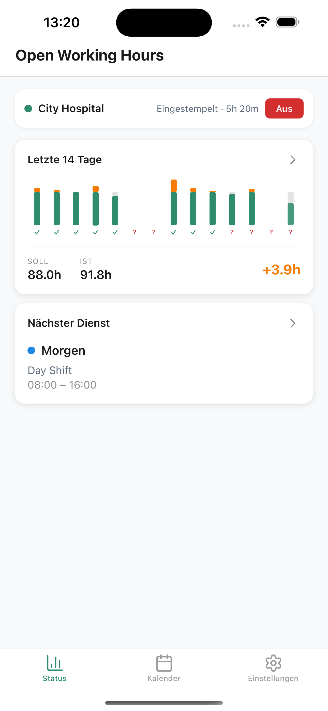
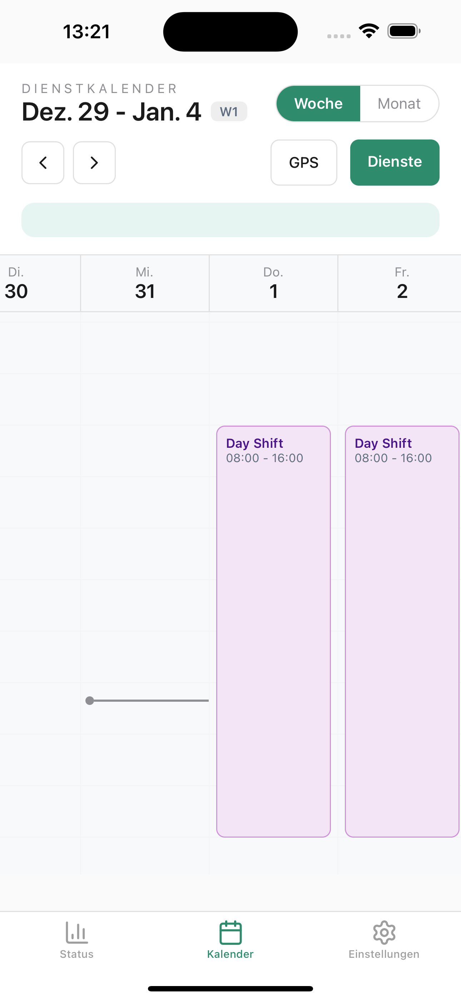
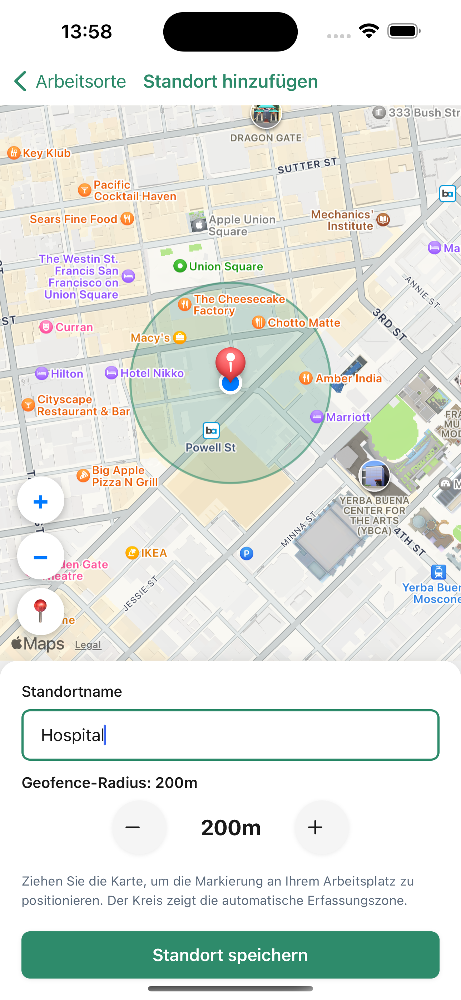

Collaboration
Areas I'm actively exploring and open to developing with others.
Evidence Infrastructures for Working Conditions (Privacy-Preserving Measurement)
Building tools that let distributed contributors generate system-level evidence about working conditions — without exposing individuals.
Open Working Hours is a native iOS app (offline-first) for tracking and reviewing working time with minimal daily effort, plus a backend that aggregates contributions into anonymized public statistics. It provides a privacy-by-design measurement layer.



The system implements privacy safeguards including minimum group sizes, cell suppression, statistical noise calibration, and built-in export/deletion functionality.
Interfaces for Conversational Language Learning
Prototyping educational tools that scaffold language learning with LLMs — integrating didactic structure, user modeling, and real-time system feedback.
Tinge is a conversational LLM-based app that tailors conversational vocabulary exploration to learners' interests using adaptive memory and interactive visualizations.


Built with Three.js, JavaScript (Node/Express), deployed via Railway.
Human-Centered Evaluation
Designing infrastructure and experimental setups to assess LLM behavior in context-specific tasks — with a focus on failure modes, interaction dynamics, and the mismatch between benchmark metrics and real-world use.
Level Ethics is a prototype for red-teaming LLMs using diverse, crowdsourced user avatars, designed to surface failure modes and value clashes during early development stages.
Built with Python and Streamlit, deployed via Streamlit Cloud. An exploratory prototyping sprint in 2025 with Jie Liang Lin.